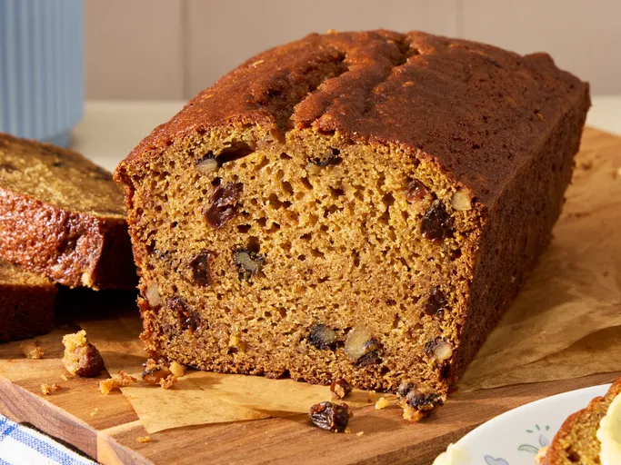

How to cook Butter Squash Bread
This Butter Squash Bread is the secret of body builders.
Ingredients
- 2 ⅔ cups white sugar
- ⅔ cup butter, softened
- 2 cups pureed cooked butternut squash
- 4 large eggs
- ⅔ cup water
- 3 ⅓ cups all-purpose flour
- 2 teaspoons baking soda
- 2 teaspoons baking powder
- 1 ½ teaspoons salt
- 1 teaspoon ground cinnamon
- 1 teaspoon ground cloves or to taste
- ⅔ cup chopped walnuts (Optional)
- ⅔ cup raisins (Optional)
Directions
- Preheat the oven to 350 degrees F (175 degrees C). Grease two 9x5-inch loaf pans.
- Beat sugar and butter together in a bowl until light and fluffy. Stir butternut squash, eggs, and water into sugar mixture.
- Mix flour, baking soda, baking powder, salt, cinnamon, and ground cloves in another bowl; stir into sugar mixture. Add walnuts and raisins; stir until batter is just blended. Divide batter evenly between the prepared loaf pans.
- Bake in the preheated oven until a toothpick inserted into the center comes out clean, about 1 hour. Cool in the pans briefly before removing to cool completely on a wire rack.